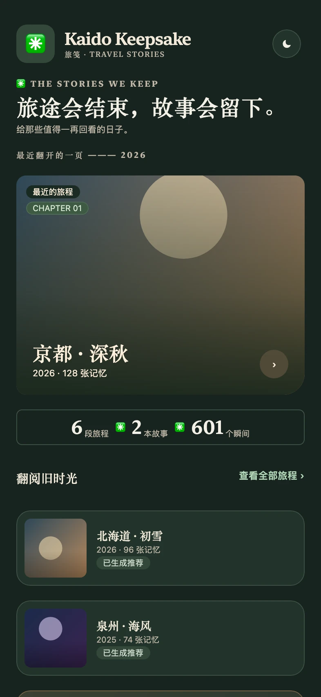

128 in. 46 out.
The shortlist arrives grouped by time, place and similarity. Keep, replace or undo any frame. Originals are never moved, edited or deleted.
AI trip selection · iPhone
Keepsake reads a whole trip's camera roll, picks the frames worth keeping, and turns them into a 15- or 30-second film in 1080p — free, without a watermark, and without the originals leaving your iPhone.
Pre-release · iOS first · on-device and local-first
No account required


Why another photo app
A trip leaves you with a thousand frames and no evening to sort them. Keepsake does the first pass: it groups by time and place, looks at sharpness, exposure and composition, and hands you a shortlist you can argue with.
The shortlist arrives grouped by time, place and similarity. Keep, replace or undo any frame. Originals are never moved, edited or deleted.
The trip becomes chapters by time and place. Choose 15 or 30 seconds and one of three moods, then change the order by hand.
Export a 1080×1920 H.264 film straight to Photos and share it anywhere. There is no membership wall on the current feature set.
A short path

Name it, choose the dates, and grant access to the photos from those days.
Keepsake groups the roll by time and place and scores the frames on device. Nothing leaves the phone.
Compare similar shots, keep the better one, undo anything. The decision stays with the trip.
Pick a length and a mood, adjust the order, then export 1080p to Photos or the share sheet.
Where it stands
Keepsake is pre-release. The iOS build runs the main path end to end — import, selection, story, 1080p export. App Store submission is still ahead, so the download button is disabled rather than decorative.
The first public build will go out through TestFlight. No date promised until it passes device testing.
Privacy
No account, no upload, no cloud library. Keepsake reads only the photos you grant, writes its own library locally, and never modifies or deletes an original. Exporting writes the finished film to your photo library.
Questions about data, or a trip that did not come out right: support@cygnusyang.top.
Download
The App Store listing is not live, so there is nothing to install today. Leave your email and you will get the TestFlight link when the first build is ready — one message, no newsletter.
iOS 17+ · iPhone · free while in pre-release